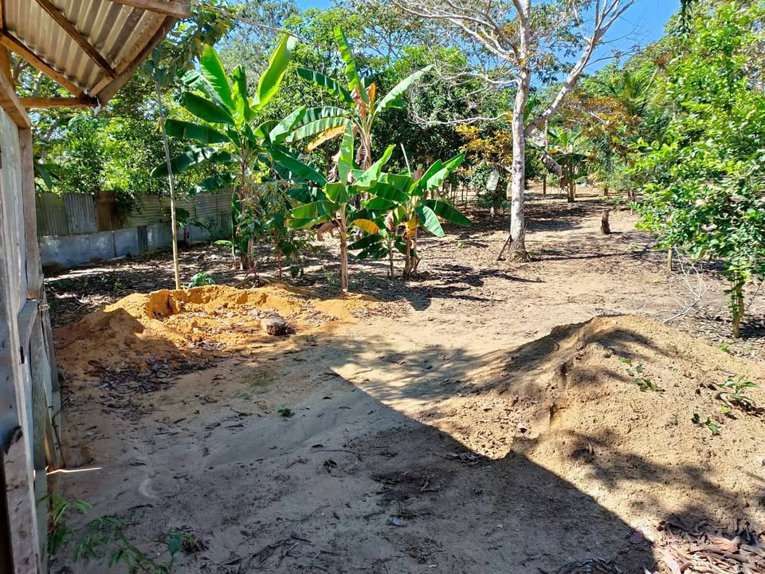

Precio desconocido 8.633 ha

¡REMATO TERRENO EN LA BANDA DE SHILCAYO – TARAPOTO! Amplio terreno ubicado en el sector Ventanilla, distrito de La Banda de Shilcayo, San Martín. Área total: 1,863.30 m² Perímetro: 219.23 metros lineales Frente hacia la calle Santa Patricia y fondo hacia la calle Agua Dulce. Cercado con calamina. Posibilidad de solicitar conexión de energía eléctrica. Acceso a servicio de agua de pozo disponible en la zona. Trato directo con la propietaria. 📞 Informes: [hidden information]. ¡Excelente oportunidad de inversión!